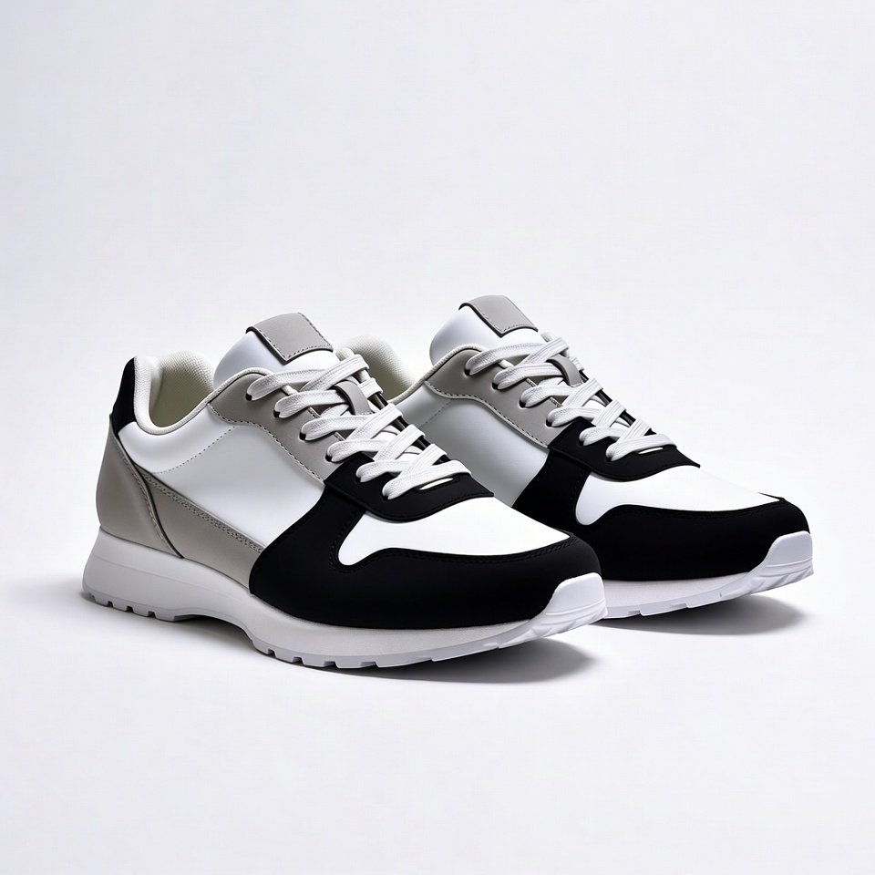
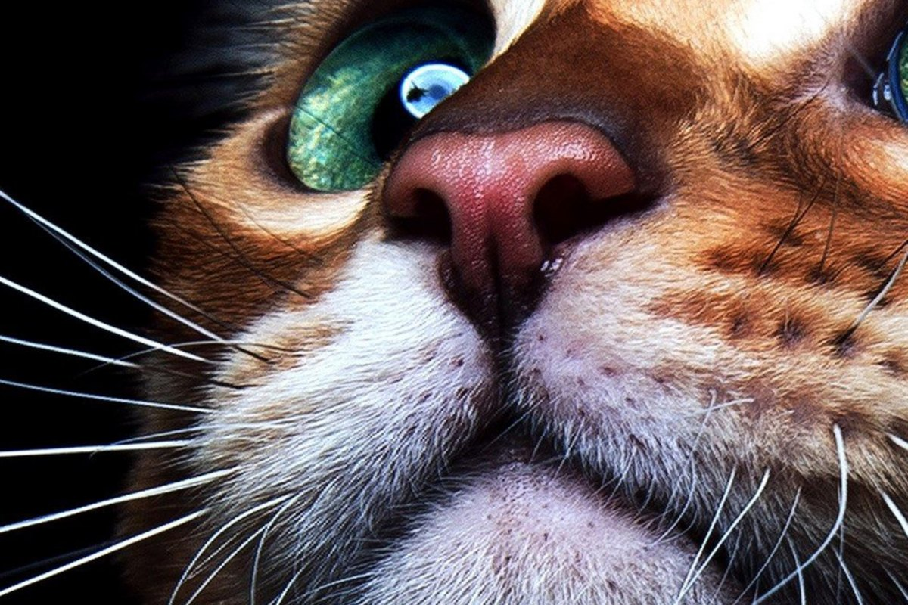
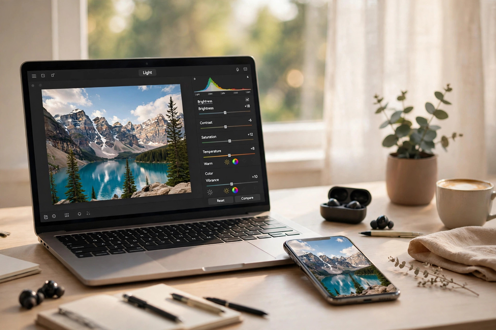
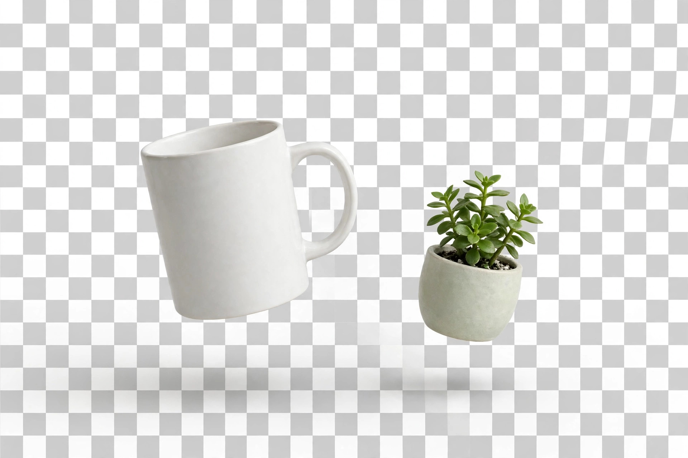

Background removal guides, one page each.
This is the blog's own page — separate from the tool. Every guide below is its own page with its own URL: one clear search question per guide, answered completely with steps, real photos, a table of contents and links to related guides. Tap any guide to open its page.
Remove BG Alternative: The Free Background Remover to Switch To in 2026
remove.bg's standalone website closes on 1 December 2026 (per its own FAQ) — and its free tier was limited long before that. What to look for in an alternative, an honest side-by-side of what free tools really give you, and the 3-step switch.
Read the guide →Make Logo Transparent: Free, in Under a Minute
Your logo is stuck on a white box. Turn it into a proper transparent PNG, avoid the fuzzy-edge trap, and use it correctly on websites, invoices and social posts.
Read the guide → GuideHow to Make a Transparent PNG From Any Photo
A transparent PNG is just a photo with the background removed and saved in a format that can hold transparency. Make one in three steps and about ten seconds, check it actually worked, and keep it transparent when you share it.
Read the guide → GuideTransparent PNG vs JPG vs WebP: Which Format Do You Actually Need?
“Save it as a PNG” is only half the story. One of these three formats physically cannot hold transparency, one is the universal safe choice, and one is smaller but not accepted everywhere. Here is the difference at a glance — and which to pick for listings, websites and print.
Read the guide →
GuideRemove Background From Product Photos: The Seller's Complete Guide
Buyers can't touch your product, so your photo does all the convincing. Marketplace search results are a wall of thumbnails — and the listings that get clicked are the ones where the product is big, bright and alone on a clean background.
Read the guide → GuideRemove Background From Photo — Free, in Your Browser
Any photo with a messy background can look like it was taken on purpose. Remove the background in your browser, drop in one clean colour or keep it transparent, and the same photo is suddenly ready for a profile, a listing, or a thumbnail.
Read the guide →
GuideFix Rough Edges After Background Removal: 7 Causes, 7 Fixes
A halo around the head, hair that looks chewed, a corner of the product missing. Almost every bad cutout traces back to one of seven causes — and most of t
Read the guide →
GuidePhoto Editor Online: Free Photo Editing in Your Browser
Crop, rotate, fix light and colour, add a filter and download — all free in your browser. No signup, no install, no watermark.
Read the guide →
GuideMake Image Transparent: Free, in Your Browser
Make any image transparent free in your browser. Remove the background in three steps, save a real transparent PNG, and avoid the white box trap.
Read the guide → GuideImage Resizer Free: Resize Any Photo in Your Browser
Resize any image free in your browser. Change the width and height in seconds, keep the quality, and download the exact size you need.
Read the guide → GuideHow to Fix Grainy Photos: Clean Up Noise Free in Your Browser
A grainy photo is full of tiny speckles that make it look rough and old. Remove the noise free in your browser, sharpen the detail and save a clean photo. No signup, no watermark.
Read the guide → GuideErase Background: Remove Any Background Free in Your Browser
Erase the background from any photo free in your browser. Remove the backdrop in three steps, keep a clean edge, and save a transparent PNG or a photo on a new background. No signup, no watermark.
Read the guide → GuideAI Upscale Image: Enlarge Any Photo Free in Your Browser
A small photo turns blurry when you enlarge it. An AI upscaler rebuilds the missing detail instead. Upscale any image free in your browser to 2x or 4x, with no signup and no watermark.
Read the guide → GuideFree Photo Enhancer: Make Any Photo Look Better Free in Your Browser
A dull photo is usually four small problems at once: too dark, too soft, a little grainy, and flat colour. A free photo enhancer fixes all four in one pass. Open the photo in the Image Upscaler, turn on enhance, and download a brighter, sharper version. No signup, no install, no watermark.
Read the guide → GuideTransparent Background Maker: Make Any Photo Transparent Free in Your Browser
A transparent background maker removes the background from any photo and saves a real transparent PNG. Make one free in your browser in three steps, check the edges, and use it on listings, logos and designs. No signup, no watermark.
Read the guide → GuideAI Image Enhancer: Make Any Photo Sharper and Brighter Free in Your Browser
An AI image enhancer fixes a dull photo in one pass: brighter light, sharper detail, less grain, richer colour. Enhance any photo free in your browser in three steps, with no signup and no watermark.
Read the guide →No guide matches that search yet. Try “background”, “logo”, “product” or “PNG” — or clear the filters above.